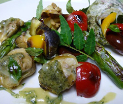

貝と夏野菜の山椒みそグリル
- 調理時間：40 分
- （一人当たり）
- カロリー：129kcal
- たんぱく質：15.5g
- 脂質：1.6g
- 塩分：1.3g


＜４人分＞
- ハマグリ（むき身）
- １２０ｇ
- ほたて
- １５０ｇ
- サザエ
- ４個
- ※お好みの貝類を
- カラーピーマン（赤、黄色）
- 各１／２個
- アスパラ
- ２本
- ズッキーニ
- １／２本
山椒みそ
- ・山椒の葉
- １０～１５枚位お好みで
- ・味噌
- ３０ｇ
- ・砂糖
- 小さじ２
- ・みりん
- 小さじ２
- ・醤油
- 少々
- ・だし汁
- 少々


- ＜山椒みそをつくる。＞
山椒の葉をすり鉢ですり、みそ、砂糖、みりんを加えてよくすり合わせる。だし汁を加減しながら加えて好みのかたさにのばす。仕上げに醤油で香り付けする。 - サザエとハマグリは焼き網（魚焼きグリルでもよい）にのせて火にかけ、中まで火を通す。
ハマグリは口が開いたら、身を取り出す。 - ホタテは食べやすい大きさに切る。
- カラーピーマンはクシ切りにする。ズッキーニは輪切りにする。アスパラは５ｃｍ長さに切る。
- フライパンに薄く油をしき、ハマグリ、ホタテ、④の野菜を加えて、焼き目がつくまで焼く。
- ⑤とサザエをお皿に盛りつけ、山椒みそを添える。
貝と夏野菜の山椒みそグリル
貝類は、女性に欠かせない成分や、生活習慣病予防に効果を発揮する栄養素が多く、成長期の子どもから、お年寄りまで、みんなで食べたい食材です。
旨味成分のグリコーゲンには肝機能を強化する働きがあるといわれています。他にも、鉄分、ビタミンＢ12、タウリンなど、貧血予防に効果的で、血液をキレイにします。さらに、ビタミンC の多い旬のカラーピーマンと食べあわせることで鉄分の吸収率を高めます。
今回は数種類に貝類と、香り豊かな山椒味噌と合わせました。山椒の葉は、季節によって呼び名が変わります。若葉のころは木の芽、初夏になると葉山椒。呼び名からも、季節感が漂いますね。